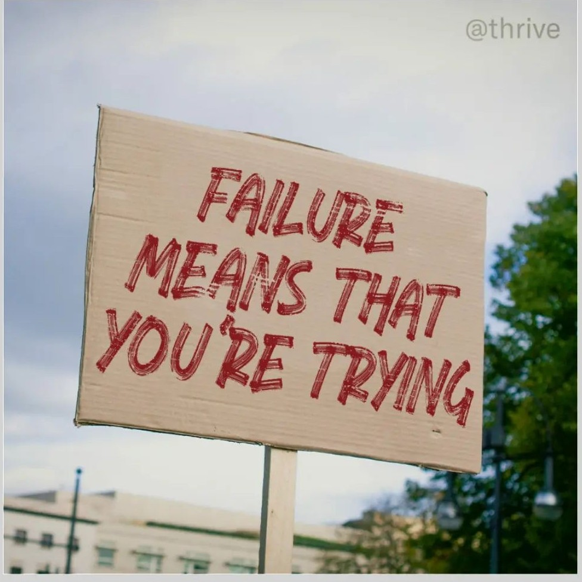

Who am I ?

Hello, and welcome to my corner of the internet!
My name is Caroline and I was born in 1982 in a really small village
of a Country named Cameroon.
Currently, I live in France with my husband an 3 children.
I’m passionate about music, travelling, cooking and meet people from different cultures.
I thrive on opportunities to learn, grow, and share my experiences. I appraciate spending quality time with my family.
Through this website, I hope to share a little more about myself, my journey, and the things that inspire me. Feel free to explore and connect—I’d love to hear from you!
My professionnal background
I have 9 years of seniority as a civil servant in the territorial administration, including 6 years as a social worker and 3 years as a public policy study and evaluation officer.
My project is to embrace the IT domain (Why not !😀)
As a social worker, I supported people facing various difficulties towards greater autonomy and self-determination. My main tasks were as follows:
- Socio-educational support for child protection beneficiaries and their families
- Social evaluation and reporting to judges
- Working in partnership and networking with social and medico-social actors
- Legal monitoring
I started working for the General Administration Department in november 2021. I was in charge of:
- Implementing transversal approaches whithin Administration services
- Helping other Departments in their projects: methodology of project management, animation, organization of professionnal and public events
- Conducting studies and data analyses to support decision-making
- Writing annual reports: Departmental Council mediator's report, gender equality report